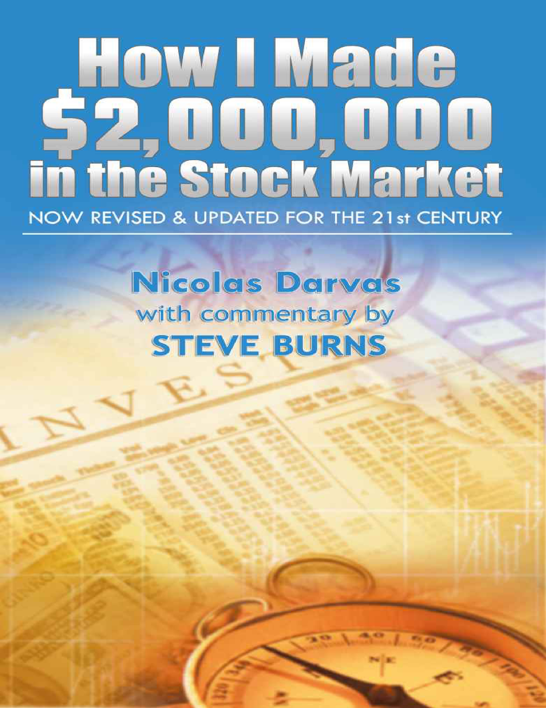

By Nicolas Darvas (commentary by Steve Burns) · 1960 / 2012 · 201 pages
Nicolas Darvas turned roughly $25,000 into over $2,000,000 in just eighteen months of active trading — a feat so remarkable that William J. O'Neil, founder of Investor's Business Daily, considers this book essential reading. But the story begins six years before the big money, when Darvas was a professional ballroom dancer performing at nightclubs around the world who stumbled into the stock market entirely by accident. In November 1952, twin brothers Al and Harry Smith offered to pay him in stock instead of cash for a Toronto nightclub appearance. They gave him 6,000 shares of a Canadian mining company called BRILUND, quoted at fifty cents a share. Darvas bought the stock for $3,000 as a polite gesture when he could not keep the engagement. Two months later, he glanced at the stock tables and nearly fell out of his chair. BRILUND was at $1.90. He sold immediately and pocketed roughly $8,000 in profit.
"I decided I had been missing a good thing all my life. I made up my mind to go into the stock market."— Nicolas Darvas
That lucky windfall hooked him completely. Darvas knew absolutely nothing about stocks — he did not even know there was a stock exchange in New York. His entire strategy consisted of asking everyone he met for tips. Nightclub customers, headwaiters, rich patrons — he listened eagerly and bought whatever anyone told him to buy. He followed hunches, rumors of uranium strikes, oil finds, and anything that sounded exciting. At any given time he owned twenty-five to thirty different penny stocks in tiny parcels, jumping in and out of the market like a grasshopper.
He was, by his own admission, "the perfect pattern of the optimistic, clueless small operator who plunges repeatedly in and out of the market." He developed emotional attachments to certain stocks for completely irrational reasons — a friend had recommended them, or he had once made a small profit on them. These became his "pets," stocks he talked about like children and refused to sell even as they bled money. His pet stocks caused his heaviest losses.
Another early lesson came from a Toronto broker's office — a tiny, dingy room full of books and charts. The broker proudly showed Darvas a dividend check from KERR-ADDISON, a famous gold company, worth five times what his father had paid for the original stock. Based on production figures and financial analysis, the broker recommended EASTERN MALARTIC. Darvas bought 1,000 shares at $2.90 and watched them slide to $2.70, then $2.60, then $2.41 before selling at a loss. The expert with his statistics and production estimates had been completely wrong — an early warning that fundamental analysis from professionals guarantees nothing.
The KAYRAND MINES trade perfectly captures his ignorance. He bought 10,000 shares at ten cents and sold them the next day at eleven cents, thinking he had made a hundred dollars. His broker gently explained that commissions were fifty dollars to buy and fifty dollars to sell, plus transfer taxes. He had actually taken a loss. He was so new to the market that he did not understand transaction costs existed.
Darvas also fell for the Canadian advisory service scam. He subscribed to tip sheets that screamed "Buy this stock now before it is too late!" and assured him that "the plutocrats of Wall Street" were trying to keep the little guy out. Every stock they recommended dropped the moment he bought it. What he did not understand was the mechanism: by the time the tipsters were advising small operators to buy, the professionals who had bought on inside information much earlier were already selling into the demand the tip sheets created. The small money was always last in and first to lose.
One trade accidentally taught him something invaluable. He bought 5,000 shares of CALDER BOUSQUET at eighteen cents purely because he liked the sound of the name. Then he flew to Madrid for a dancing engagement. When he returned a month later, the stock had doubled to thirty-six cents. He sold for a $900 profit. The key insight was not the profit itself — it was that he would have panicked and sold at twenty-two cents if he had been watching it. His absence from the market forced him to hold. Being away from stock quotes had accidentally taught him the power of letting profits run.
After seven months of frantic Canadian trading, Darvas sat down and reviewed his books. He had lost nearly $3,000. His ledger read like a catalog of defeat: OLD SMOKY GAS & OILS bought at 19 cents, sold at 10. KAYRAND MINES bought at 12 cents, sold at 8. REXSPAR bought at $1.30, sold at $1.10. He was only still solvent because of the original BRILUND windfall. But if he continued at this rate, how much longer would that last?
By the end of 1953, his original $11,000 had shrunk to $5,800. He sold his last Canadian stock, added savings from his dancing career to bring his stake to $10,000, and turned his attention to the bigger jungle: the New York Stock Exchange.
Wall Street gave Darvas something far more dangerous than losses — it gave him false confidence. His new broker, Lou Keller, suggested "safe stocks" with solid fundamental reasons: dividend increases, stock splits, improving earnings. What Darvas did not realize was that he had landed in the middle of the biggest bull market the world had ever seen. In that environment, it was almost impossible not to show a paper profit. Three early trades — COLUMBIA PICTURES, NORTH AMERICAN AVIATION, and KIMBERLY-CLARK — each netted about $400. He made $1,333 in just a few weeks and concluded that he was a natural.
The overtrading that followed was staggering. Darvas telephoned his broker sometimes twenty times a day. If he did not execute at least one transaction daily, he felt he was not "fulfilling my role in the market." He reached for fresh stocks like a child grabbing new toys. In July 1954, a batch of ten rapid-fire trades produced a total net profit of $1.89. The only person who made money was the broker, whose commissions on those same transactions came to $236.65.
"I continued to trade constantly. I telephoned my broker sometimes twenty times a day. If I did not conduct at least one transaction a day I did not feel I was fulfilling my role in the market."— Nicolas Darvas
Darvas then fell for one of Wall Street's most seductive sayings: "You cannot go broke taking a profit." The KAISER ALUMINUM debacle showed exactly how you can. He bought at 63⅜ and sold at 75 for a $1,074 profit. Thrilled, he jumped into BOEING (lost $403), then MAGMA COPPER (lost $1,016), then back into KAISER at 82 — which he sold five minutes later at 81¾ for another $115 loss. The entire circular KAISER operation, which began and ended with the same stock, produced a net loss of $461. If he had simply held KAISER from his original purchase at 63⅜ to its ultimate price of 81¾, he would have profited $1,748 instead.
The same pattern played out with RAYONIER. From November 1954 to March 1955, he jumped in and out three times as the stock climbed from 50 to 100, collecting $1,238 in small profits. Then he switched to MANATI SUGAR and lost $1,043. Net profit on the combined operation: $195. If he had held his original RAYONIER purchase, his profit would have been $2,612.
He briefly ventured into the over-the-counter market, lured by the idea of buying cheap stocks that nobody knew about. He bought illiquid names like PACIFIC AIRMOTIVE, DOMAN HELICOPTER, and TEKOIL CORPORATION. When he tried to sell, the stocks "stuck to my fingers like tar." The bid-ask spreads were enormous, and there was no continuous market. He quickly abandoned OTC and returned to listed stocks.
He also tried following corporate insiders, reading SEC filings that tracked when officers and directors bought and sold their own company's stock. This did not work either — by the time the filings were public, the information was stale. Insiders, he discovered, "often bought too late or sold too soon. They might know all about their company but they did not know about the attitude of the market in which their stock was sold." It was one of his earliest recognitions that knowing a company's fundamentals and knowing how its stock will behave are two entirely different things.
From these painful experiences, Darvas distilled his first set of rules: do not follow advisory services, be cautious with broker advice, ignore Wall Street sayings, avoid OTC stocks, do not listen to rumors, study fundamentals rather than gamble, and hold one rising stock for a long time rather than juggling dozens for short periods.
The seventh rule came from an accidental discovery. He found a stock called VIRGINIAN RAILWAY in his portfolio that he had completely forgotten about. He had bought it eleven months earlier and ignored it while frantically trading other stocks. This quiet, dividend-paying stock had risen from 29¾ to 43½, making him $1,303 without any effort, anxiety, or commission churn. The stocks he forgot about outperformed the ones he obsessively traded.
Armed with his new rules, Darvas dove deep into fundamental analysis. He learned to read balance sheets, income statements, price-earnings ratios, and industry comparison tables. He subscribed to stock rating services and spent nights comparing companies across industry groups. He had noticed that stocks in the same industry tended to move together — when General Motors rose, he automatically checked Chrysler and Studebaker. He looked for the strongest industry group, then the strongest company within that group.
He discovered a widely used rating service that graded stocks from AAA (safest) through D (no apparent value), covering dividends, earnings, price ranges, and financial structure for several thousand companies. Darvas was delighted — no longer did he need to analyze balance sheets himself. He set up elaborate comparison tables, poring over earnings per share, estimated future earnings, and dividend yields across five steel companies: Bethlehem Steel, Inland Steel, U.S. Steel, Jones & Laughlin, and Republic Steel. The process made him feel like "a soon-graduating expert in finance."
Time and again, however, the market refused to cooperate with his analysis. When balance sheets looked perfect and prospects seemed bright, the stock market never acted accordingly. He compared a dozen textile companies and decided that AMERICAN VISCOSE and STEVENS were the best choices — but it was another stock called TEXTRON that advanced in price while his selections stood still. He found this pattern repeated across multiple industry groups.
After months of painstaking research, his table pointed clearly to one stock: JONES & LAUGHLIN, a steel company. It belonged to a strong industry group, carried a solid B rating, paid nearly 6% in dividends, and had the best price-earnings ratio among its peers. Everything about it seemed perfect. Darvas felt he had found "the golden key" — a gilt-edged scientific certainty.
His confidence was so absolute that he mortgaged his Las Vegas property, borrowed against his insurance policy, and took an advance from the Latin Quarter nightclub. On September 23, 1955, he bought 1,000 shares of JONES & LAUGHLIN at 52¼ on 70% margin. The total cost was $52,652, and he had to deposit $36,856 in cash. Three days later, the stock began to drop.
"I said to myself, there is no reason for the drop. It is a good sound stock; it will come back. I must hold on. And I held on and I held on." — Nicolas Darvas
He was paralyzed. His exhaustive research told him the stock was worth at least $75. But the market did not care about his research. By October 10, JONES & LAUGHLIN had fallen to 44. Every point the stock dropped meant another $1,000 loss. When he finally cracked and sold, his net loss was $9,069. The horror of potential bankruptcy — he might lose his Las Vegas property — stared him in the face.
Black despair followed. Every method he had tried — gambling, tips, fundamental analysis — had failed. But while studying the stock tables in desperation, he noticed TEXAS GULF PRODUCING. It was rising steadily, day after day, for no reason he could identify. He knew nothing about its fundamentals and had heard no rumors about it. All he knew was that it was going up. In desperation, he bought 1,000 shares at prices around 37½, spending $37,586.
For the first time in his stock market career, he refused to take a quick profit. He had a $9,000 loss to recover and he dared not sell prematurely. He held for five weeks and sold at 43¼ for $42,840. It did not fully cover his JONES & LAUGHLIN loss, but it recovered more than half. And it pointed him toward a revelation that would change everything: the stock that saved him was one about which he knew nothing. He had picked it for one reason only — it appeared to be rising.
After the JONES & LAUGHLIN disaster and the TEXAS GULF PRODUCING rescue, Darvas sat down to examine his entire trading history. The fundamental approach had failed catastrophically; the technical approach — buying a stock simply because its price was rising — had worked. Obviously, the path forward was to repeat the successful approach.
His second technical confirmation came with M & M WOOD WORKING. None of the financial information services could tell him anything about this obscure company. His broker had never heard of it. Yet its daily action — rising price with increasing volume — reminded him of TEXAS GULF PRODUCING. He bought 500 shares at 26⅝ and held on. When it reached 33⅛, he sold for a $2,866 profit. Weeks later, he learned from the newspaper that the rise had been caused by a secretly negotiated merger. Another company was taking over M & M WOOD WORKING for $35 per share. He had sold just two points under the ultimate high.
"My buying, based purely on the stock's behavior, enabled me to profit from a proposed merger without knowing anything about it. I was an insider without actually being one." — Nicolas Darvas
This convinced him that price action and volume, stripped of all other information, could produce positive results. If something fundamental was happening in a company's life, it would show up in the rising price and volume of its stock. He did not need to know the reason — he just needed to spot the movement early enough.
He developed the "tempestuous beauty" analogy to explain how he detected unusual activity. If a beautiful dancer jumped on a table, no one would be surprised — that was expected behavior. But if a dignified matron suddenly did the same, people would immediately say something strange had happened. Applied to stocks: if a normally quiet stock suddenly became active and advanced in price, someone with good information was behind the movement. By buying the stock, Darvas would become their "silent partner."
After studying hundreds of charts and stock tables, he made the core discovery of his career: stocks did not fly randomly in any direction like balloons. They had defined upward or downward trends, and within those trends they moved in a series of frames — what he began calling "boxes." A stock would oscillate between a high point and a low point with remarkable consistency. The area enclosed by this up-and-down movement was the box.
The boxes stacked like a pyramid, one on top of another. A stock in a 45/50 box might bounce between 45 and 50 for days or weeks — and Darvas was perfectly content with that movement. What he watched for was the moment the stock pushed above 50 and established a new, higher box. That was his buy signal. Conversely, if the stock fell below 45 — the floor of its current box — it was falling back into a lower box, and he sold immediately.
He used the dancer's crouch analogy: before a dancer leaps into the air, he goes into a crouch to set himself for the spring. A stock that pulled back from 50 to 45 within its uptrend was not falling — it was crouching, coiling for the next leg up. These pullbacks also served a practical purpose: they shook out weak stockholders who mistook the reaction for a reversal, clearing the way for a faster advance.
The PITTSBURGH METALLURGICAL trade taught him about timing. He bought at 67 because it looked dynamic, but examining its history afterward he discovered he had bought at the very top of an 18-point rise. He had bought the right stock at the wrong time. The question then became: how to judge the right moment to buy?
The LOUISIANA LAND & EXPLORATION trade answered this. Darvas identified the stock breaking into a new box at 61, but his broker took two hours to reach him by phone — by which time it was at 63. He bought at 65, at the top of the new box instead of the bottom. His broker suggested a solution: automatic "on-stop" buy orders. Instead of waiting for a phone call, Darvas could place an order to buy automatically when the stock reached a specified price. This mechanized his timing and eliminated the delay.
Three consecutive trades validated the box theory. He bought ALLEGHENY LUDLUM STEEL at 45¾ as it appeared to enter the 45/50 box, selling three weeks later at 51. He bought DRESSER INDUSTRIES at 84 entering the 84/92 box, but sold at 86½ when it did not progress as expected. He bought COOPER-BESSEMER at 40¾ at the bottom of the 40/45 box and sold at 45½. Total profit on these three trades: $2,442. The theory was working.
The NORTH AMERICAN AVIATION disaster then taught him the final critical lesson. He bought 500 shares at 94⅜, convinced it was about to break into a new box above 100. It did not. His pride would not let him sell — "this stock cannot go down any further." By week's end, all profit from his previous three successful trades was gone. This experience crystallized four realizations: there is no sure thing in the market; he must accept being wrong half the time; he must become an impartial diagnostician who does not identify with any stock or theory; and he must reduce his risks as far as humanly possible.
The risk reduction led to his invention of the stop-loss. He would place buy orders at specific prices and simultaneously attach an automatic sell order below the box floor. If the stock dropped below where it should be, he would be sold out with a small loss — automatically, without emotion. He combined this with a trailing stop-loss that moved up with the stock price, far enough away that normal box bouncing would not trigger it, but close enough that a real reversal would protect his profits. His system was now complete.
Four objectives: right stocks, right timing, small losses, big profits. Four weapons: price and volume, box theory, automatic buy order, stop-loss sell order. Basic strategy: jog along with an upward trend, trailing his stop-loss behind him, buying more as the trend continued, and running "like a thief" when it reversed.
Just as Darvas assembled his trading system, he signed up for a two-year world dancing tour. The logistical challenge was enormous: how could he trade Wall Street from Kashmir, Nepal, and Saigon? He and his broker devised a solution using daily telegrams. Each evening, the broker would cable the closing price, daily high, and daily low for each of Darvas's stocks, using a coded format. Barron's weekly magazine was airmailed to him globally, usually arriving by Thursday — four days behind Wall Street.
The cables from post offices around the world created constant confusion. Japanese telegraph officials thought Darvas was a spy. In Laos, there was no telephone system at all — only a single line between the American military mission and the Embassy. He had to take rickshaws to the post office, which closed at precise hours with a twelve-hour time difference from New York. In Nepal, the only telegraph office was in the Indian Embassy, whose officials considered private cables beneath their dignity.
Darvas was initially terrified of being so far from the action. But as weeks passed, he gradually realized that distance was not a disadvantage — it was his greatest asset. No phone calls, no confusion, no contradictory rumors gave him "a much more detached view." He handled only five to eight stocks at a time, separated from "the confusing, jungle-like movement of the hundreds of stocks which surrounded them."
"I could not hear what people said, but I could see what they did. It was like a poker game in which I could not hear the betting, but I could see all the cards." — Nicolas Darvas
He tried paper trading first but found it useless — "like playing cards without any dollars in the pot." With no money at risk, controlling emotions was easy. The moment he put real money into a stock, his emotions "came floating quickly up to the surface."
A critical discovery came when his stocks made inexplicable moves. Searching Barron's for answers, he realized these moves coincided with violent swings in the general market. He had been watching only his own stocks while ignoring the broader trend — like trying to direct a battle by looking at only one section of the battlefield. He added the Dow Jones Industrial Average to his daily cables. But he learned not to apply it mechanically — the DJIA was merely a gauge of whether he was in a strong or weak market, not a predictor of individual stocks.
He kept meticulous cause-of-error tables for every losing trade: BLAND CREEK COAL (bought too late), JOY MANUFACTURING (stop-loss too close), EASTERN GAS & FUEL (overlooked weak general market), ALCOA (bought on decline). He began to notice that stocks had distinct "characters" — some were calm and predictable, others wild and hostile. If a stock hurt him twice, he refused to touch it again.
He also rejected the common practice of holding stocks six months to qualify for long-term capital gains. Holding a falling stock for tax reasons was gambling dressed up as prudence. He would do the right thing first and worry about taxes later.
His successful operation in COOPER BESSEMER illustrated his growing skill — he bought it three times, lost on the first two, and profited handsomely on the third. Then the 1957 bear market arrived. One by one, his stocks sagged through the bottom of their boxes and triggered his stop-losses. By August 26, 1957, he held not a single stock. His automatic stop-losses had sold him out of everything.
When he later studied what happened to those stocks, every one had dropped dramatically — BALTIMORE & OHIO from 55 to 22⅝, FOSTER WHEELER from 59½ to 25⅛, AEROQUIP from 27½ to 16⅞. Without stop-losses, he would have lost roughly 50% of his capital. Instead, he emerged from the greatest bull market in history with his original $37,000 almost intact — technically a net loss of $889, but armed with an education worth far more than any profit.
With the 1957 bear market in full swing and not a single stock in his portfolio, Darvas sat on the sidelines and took a clinical look at the situation. He compared the two markets using a vivid analogy: the bull market was "a sunny summer camp filled with powerful athletes" where some were simply stronger than others. The bear market was a hospital — "the great majority of stocks were sick, but some were sicker than others." A stock that had fallen from 100 to 40 would not climb back for a very long time, like an athlete with a badly injured leg who needed months of recuperation.
He firmly refused to trade, telling his broker "this is a market for the birds." Week after week, he spent his time watching from the sidelines, studying Barron's quotations like a runner limbering up for a race. He searched for stocks that resisted the decline, reasoning that if they could swim against the stream, they would advance most rapidly when the current changed.
This search led to a breakthrough discovery. The stocks that held up best during the bear market were companies whose earning trends pointed sharply upward. Capital was flowing into these stocks even in a bad market, following improving earnings "as a dog follows a scent." This insight opened his eyes to a completely new perspective: stocks are the slaves of earning power.
"I decided that while there may be many reasons behind any stock movement, I would look only for one: improving earning power or anticipation of it."— Nicolas Darvas
This was the birth of his techno-fundamentalist theory. He would select stocks by their technical action in the market — rising price, increasing volume, forming boxes — but would only buy them when he could point to improving earnings as the fundamental reason. The technical side told him when to buy; the fundamental side told him what to buy.
He took what he called a "twenty-year view" of stock selection, searching for companies tied up with the future — infant industries where revolutionary new products would sharply improve earnings. In the late 1950s, these were electronics, missiles, and rocket fuels. He drew a historical parallel: before automobiles, smart operators had invested in railroads because they would supersede the covered wagon. A generation later, the shrewd investors moved into General Motors and Chrysler, which were comparatively small firms at the time but represented the future.
He also recognized that stocks have fashions, like women's clothing. The forward-looking investor rides the fashion while it lasts, then exits when it fades. Darvas had to be alert for fashion changes, or he might be left "holding a long-skirt stock when the new stocks were showing their knees."
A practical consideration also shaped his strategy: higher-priced stocks were cheaper to trade. With $10,000 to invest, commissions on a $10 stock (1,000 shares) came to $300 round-trip, while commissions on a $100 stock (100 shares) were only $90. Mistakes would cost less with higher-priced names.
Looking back, Darvas saw his five years of expensive education as a jigsaw puzzle finally falling into place. "My Canadian period taught me not to gamble; my fundamentalist period taught me about industry groups and their earning trends; my technical period taught me how to interpret price-action and the technical position of stocks — and now I reinforced myself by piecing them all together." Each painful phase had contributed an essential piece to the techno-fundamentalist system.
By November 1957, he had identified five sleeping stocks that met his criteria: UNIVERSAL PRODUCTS at 20, THIOKOL CHEMICAL at 64, TEXAS INSTRUMENTS at 23, ZENITH RADIO at 116, and FAIRCHILD CAMERA at 19. These stocks, he believed, were "not dead — they were only sleeping the promising sleep of the unborn." They were going to make him two million dollars.
LORILLARD was Darvas's first techno-fundamentalist trade. Performing at the "Arc En Ciel" in Saigon in November 1957, he noticed this unknown stock rising from 17 into a 24/27 box while the rest of the market sank. Its weekly volume had exploded to 126,700 shares — versus its usual 10,000. He learned it manufactured "Kent" and "Old Gold" filter-tip cigarettes, and the filter-tip craze was sweeping America. Technical strength in a bear market, unusual volume, and a clear fundamental catalyst — the techno-fundamentalist trifecta.
He cabled from Bangkok: "BUY 200 LORILLARD 27½ ON STOP WITH 26 STOPLOSS." Even with his merged technical-fundamental confidence, he did not for one moment consider abandoning his stop-loss — "no matter how well built your house is, you would not think of forgetting to insure it against fire." Within days he received confirmation: 200 shares bought at 27½. He braced himself for a big rise.
The first experience was disheartening. On November 26, LORILLARD dropped back exactly to his stop-loss of 26 and he was sold out. To add insult to injury, the stock immediately bounced and closed at 26¾. But the reaction was so short and the rise that followed so firm that he went right back in, buying at 28¾ with the same stop at 26. This time the stock pyramided beautifully: 27/32, then 31/35, then pushed toward 44. A cancer scare report about filter-tips dropped it from 44⅜ to 36¾ in one day — but his stop at 36 was not touched. He added 400 more shares at 38⅝. By March, volume hit 316,600 as it entered the 50/54 box. Meanwhile, a well-known advisory service was urging subscribers to sell LORILLARD short — their third consecutive wrong recommendation on this stock.
DINERS' CLUB was his second trade — a near-monopoly in the nascent credit card industry. He bought 500 shares at 24½ after a 2-for-1 split, added 500 more at 26⅛. The stock climbed through boxes — 28/30, then 32/36 — with impressive volume. But when it hesitated near 36, Darvas sensed trouble and tightened his stop to an unusually narrow margin. In the fourth week of April, DINERS' CLUB broke through its box floor and he was sold out at $35,848 for a profit of $10,328. Six weeks later, American Express announced plans to launch a rival credit card. Insiders had known before the announcement and were selling. Without knowing any of this, the technical side of Darvas's system had warned him to exit.
Then came the spectacular E.L. BRUCE trade. A small Memphis firm on the American Stock Exchange making hardwood flooring — it did not fit his fundamental requirements at all. But the technical pattern was overwhelming. Volume exploded from under 5,000 shares weekly to 19,100, then 41,500, then 54,200, then 76,500 — with the price jumping 5-8 points every week without any downward reaction. It went from 18 to 50 in weeks. Darvas decided: fundamentals or no fundamentals, if it went over 50, he would buy heavily.
He sold his LORILLARD position at 57⅜ for a $21,052 profit, opened accounts with two additional brokerages to avoid detection, and bought 2,500 shares of BRUCE between 50¾ and 53⅝ — investing $130,687 on margin. The stock soared past 60, then 77. Then one day a terrifying call reached him in Calcutta: trading in BRUCE had been suspended on the American Stock Exchange.
The news, it turned out, was not bad at all. A New York manufacturer named Edward Gilbert was waging a takeover battle against the Bruce family, trying to acquire a majority of the 314,600 shares outstanding. Short sellers who had sold the stock between 45 and 50, confident that book value made it worth only $30, were trapped in a vicious squeeze. Over 275,000 shares changed hands in ten weeks.
Darvas's broker asked if he wanted to sell at the over-the-counter price of $100 per share. He made one of the most momentous decisions of his life: "No, I will not sell at 100. I have no reason to sell an advancing stock. I will hold onto it." Over the following weeks, he gradually sold blocks of 100 to 200 shares on the OTC market for an average price of 171. His profit on E.L. BRUCE: $295,305. Nobody in Calcutta believed he had done it without a tip from Edward Gilbert himself.
The overwhelming success of E.L. BRUCE, where he made over $325,000 in nine months, should have made Darvas reckless. Instead, it made him more cautious. He knew that "so many operators have made big money in nine months and lost it in nine weeks." His first move was to withdraw half his profits from the market. With the remaining capital he watched warily for new opportunities.
Small losses followed — MOLYBDENUM ($482) and HAVEG INDUSTRIES ($804) — which proved his system was protecting capital even when his stock picks were wrong. Then he made a costly emotional mistake: he went back to LORILLARD out of sentimental attachment. It had been his first big winner — "it became my American pet." He bought it three more times, losing each time: $3,590, $1,169, and $1,712. The stock that had once been a beacon in a bear market had become "a rather weary, slow-moving elderly gentleman." After the third loss, he finally broke the sentimental attachment.
His balance sheet at this point told the story of a system that worked: LORILLARD profit $23,052, DINERS' CLUB profit $10,328, E.L. BRUCE profit $295,305 — against LORILLARD losses of $6,472, MOLYBDENUM $482, and HAVEG INDUSTRIES $804. Net profit: $318,927. Total losses were only $7,759 against combined profits of $326,686.
One factor that spurred him to search harder was that the general market was starting to strengthen. Darvas sensed this strengthening becoming "pronounced" and wanted to take full advantage by getting into a promising stock as early as possible. The big money, he had learned, is made at the very beginning of a new bull market — the first leaders that break out above old resistance levels become the cycle's biggest winners.
UNIVERSAL PRODUCTS (later UNIVERSAL CONTROLS) was an electronics company he spotted in Barron's as the general market strengthened. He started with a pilot buy — 300 shares at 35¼ — to get a "feel" for the stock's movement. He recommended it to his secretary at 31¾ with explicit instructions: "If it goes below 30, take a loss and sell it, otherwise hold it for a big rise." The secretary's father, an old-fashioned fundamentalist, insisted on examining the company's books before investing. While he studied, the stock climbed to 50. As it firmed up, Darvas added 1,200 shares from Srinagar, Kashmir, then another 1,500 from Karachi. Total: 3,000 shares for $115,313, which became 6,000 shares after a 2-for-1 split.
THIOKOL CHEMICAL, a rocket fuel manufacturer, was the other great trade of this period. He first noticed it in February 1958, sitting calmly in a 39/47 box — "a calm that precedes the storm." He watched it for months, then made his move in August with a 200-share pilot buy at 47¼, followed by 1,300 shares at 49⅞ on stop. Then came an extraordinary opportunity: THIOKOL issued stock rights, allowing him to buy shares at $42 through a special subscription account with 75% leverage and zero commission. Darvas plunged in with all his free cash. He bought 36,000 rights, converted them to 3,000 shares, then repeated the entire operation — selling his original 1,500 shares to fund a second block of 36,000 rights converting to another 3,000 shares. Total: 6,000 THIOKOL shares for $350,820.
When THIOKOL moved from the American to the New York Stock Exchange in December 1958, it jumped 8 points immediately. The following week it touched 100. A cable from his broker reached the Georges V Hotel in Paris: "YOUR THIOKOL PROFITS NOW $250,000."
The urge to sell was almost unbearable. Every instinct screamed to take the money. But Darvas sat at his dressing table and wrote on a little card: "Remember BRUCE!" He carried it around Paris, pulling it out every time the temptation struck. It reminded him how he had held BRUCE from 50 all the way to 171 by refusing to sell an advancing stock. The card kept him in THIOKOL. When he returned to New York in January 1959, his combined portfolio — 6,000 THIOKOL and 6,000 UNIVERSAL CONTROLS — was worth well over half a million dollars.
This chapter contains the most important lesson in the book. Arriving in New York with over $500,000 in profits, Darvas became dangerously overconfident. He imagined himself "a Napoleon of finance" and decided to trade directly from Wall Street. He walked into a broker's boardroom — a large room with chairs arranged in front of the stock ticker, filled with nervous people, clacking machines, and an atmosphere "like hangers-on in Monte Carlo." On the first day he felt above it all. Within a week he had joined them.
"In a few days of trading, I threw overboard everything I had learned over the past six years. I did everything I had trained myself not to do. I talked to brokers. I listened to rumors. I was never off the ticker."— Nicolas Darvas
The boardroom destroyed him. He abandoned his boxes, his stop-losses, his patience. He put in contradictory orders, bought stocks at 55 and hung on as they fell to 51. He became a day trader, buying and selling within hours. The vicious circle was textbook: bought at the top, stock dropped, became frightened, sold at the bottom, stock started to rise, became greedy, bought at the top again. "Instead of being a lone wolf, I became a confused, excited lamb milling around with others, waiting to be clipped."
The losses were catastrophic. In a few weeks he lost nearly $100,000 across fourteen trades: HAVEG INDUSTRIES ($18,258), SHARON STEEL ($11,485), RAYTHEON ($7,077), AMERICAN METALS-CLIMAX ($7,487), ROME CABLE ($6,650), NATIONAL RESEARCH ($6,123), AMERICAN MOTORS ($5,844), MOLYBDENUM ($5,522), BRUNSWICK-BALKE-COLLENDER ($5,447), and more. He developed a "tremendous frustration" and started blaming mysterious "they" — "they were selling me dear, they were buying stock from me cheap."
The situation deteriorated further. Haunted by losses and racked by confusion, Darvas reached a point where he could read stock quotation columns but they no longer told him anything. Then came an even worse phase — he could no longer even see the figures clearly. His mind had become blurred. "This last phase really frightened me. I felt like a drunk who loses touch with reality and cannot understand why." He had been reading too much, trading too much, trying to do too much. The market had not beaten him — he had beaten himself.
The only thing that saved him from total ruin was that UNIVERSAL CONTROLS and THIOKOL — the two stocks he had left alone because he was too busy losing money on other trades — continued to perform well. He sold everything else, instructed his brokers to never telephone him or give unsolicited information, and fled to Paris.
For two weeks his daily telegrams were meaningless — his mind was blurred, his coordination broken. He felt like "a drunk who loses touch with reality." Then, at the Hotel Georges V, the figures slowly began to clear. His "feeling" returned. The diagnosis was painfully simple: "My ears were my enemy." When he was abroad, he had operated calmly and neutrally, with no interruptions, rumors, or emotional contamination. In New York, "there were interruptions, rumors, panics, contradictory information, all floating into my ear." His emotions had become involved with the stocks, and "the cold, clinical approach had gone."
He made it a permanent rule: never visit a brokerage office. Even living in New York, Wall Street had to be "thousands of miles away." Brokers were forbidden from calling. His only contact with the market would be the daily telegram at 6 PM and the closing prices in the evening newspaper — from which he would tear out only the stock quotation pages and throw away all financial commentary.
Like a man who has survived a plane crash and knows he must fly again immediately or lose his nerve forever, Darvas booked a flight back to New York. He knew there was only one way to make his method foolproof — to maintain absolute isolation from Wall Street noise, regardless of physical location. The crisis had cost him roughly $100,000 and months of anguish, but it had taught him the most valuable lesson of his entire career: discipline is not something you can set aside when you feel confident. The moment you think you have mastered the market is the moment you are most vulnerable to it.
Darvas returned to New York in the third week of February 1959, completely recovered. He had learned his last and most important lesson: he must keep rigidly to his system, and if he deviated from it even once, his entire financial structure could crash "like a house of cards." He erected an iron fence around himself — spreading his deals across six brokers so none could track his full operation, instructing the hotel operator to block all calls, and receiving telegrams only after the market closed at 6 PM.
His routine was almost monastic. He woke up late (a nightclub performer's schedule), received his telegram and the evening newspaper's stock pages at 7 PM, and settled down to work while Wall Street slept. He studied price action, analyzed his boxes, and made his trading decisions in complete isolation. "My delegate, the stop-loss order, represents me in case something unforeseen happens."
UNIVERSAL CONTROLS began showing trouble — its advance from 66 to 102 in three weeks was too wild, too fast. The steady upward progress had become erratic. Darvas tightened his stop-loss to within two points of the closing price. The next morning he was sold out between $86 and $89, twelve points from the high. Selling price: $524,669. Profit: $409,356.
With over half a million dollars freed up, he needed a high-priced, actively traded stock where his capital would not distort the market. TEXAS INSTRUMENTS fit perfectly. He bought 2,000 shares at 94⅜, added 1,500 at 97⅞, then 2,000 more at 101⅞. Total: 5,500 shares for $541,996 — more than half a million dollars in a single stock.
THIOKOL reached its climax after a 3-for-1 split. In the first week of May, the newly split stock shot to 72 on incredible volume: 549,400 shares in a single week, with a 13¼-point advance representing $40 million in aggregate trading value. Then the New York Stock Exchange governors took the extraordinary step of suspending all stop orders on THIOKOL. Without his stop-loss — the tool he called his "most powerful weapon" — Darvas could not operate. He sold immediately at an average of 68. His 6,000 original shares had become 18,000 after the split. Total received: $1,212,851. Profit: $862,031.
Now he had to reinvest roughly a million dollars. He chose four candidates — ZENITH RADIO, LITTON INDUSTRIES, FAIRCHILD CAMERA, and BECKMAN INSTRUMENTS — all of which fit his techno-fundamentalist criteria. Rather than agonize over which two to choose, he let the market decide. He made a pilot buy of 500 shares in each, with a 10% stop-loss on all four. Within days, BECKMAN INSTRUMENTS and LITTON INDUSTRIES were stopped out. The market had eliminated the two weakest candidates.
He poured his capital into the two survivors: ZENITH RADIO (5,500 shares for $574,842) and FAIRCHILD CAMERA (4,500 shares for $567,820). Total reinvested at 90% margin: $1,684,660. Then he sat back and watched. On June 9, a single day's telegram told him his holdings had appreciated by $100,000.
Before leaving for a performance at the Sporting Club in Monte Carlo, Darvas met with his brokers. If he sold everything, he could realize over $2,250,000. His reaction surprised him. He was happy, but not excited — "I had been much more excited when I made my first $10,000 out of DINERS' CLUB." He felt like "a runner who has trained strenuously and has suffered many defeats, and now trots to victory."
Should he sell? The answer came easily: "I did not have any reason to sell a rising stock. I would just continue to jog along with the trend, trailing my stop-loss behind me." He put protective stop-losses on all positions before flying to Europe, walked into the lobby of the Plaza Hotel, tore out the stock pages from an evening newspaper, threw away the rest, picked up his 6 PM telegram, and went up in the elevator. In his room, he spread out the telegram and the newspaper page, and sat back with a happy sigh. Not only because he had made two million dollars — but because he was doing what he liked best: working while Wall Street slept.
Each chapter is followed by Burns' modern commentary, which repeats Darvas's key quotes in bold and then explains them in 21st-century terms. While useful for absolute beginners, experienced traders will find these sections largely restate what Darvas already made clear through his narrative. The Darvas chapters themselves carry all the lessons.
Burns recommends Investor's Business Daily, the IBD 50 list, and the Darvas Trader newsletter as modern tools. These recommendations were current in 2012 and may be dated. The principles are more important than the specific tools.
The extended description of AAA through D stock ratings and the five-company steel comparison table is historically interesting but operationally irrelevant — Darvas abandons this entire approach by the end of the chapter when it fails spectacularly.
The detailed breakdown of 1950s NYSE commission structures ($6 for a $1 stock through $45 for a $100 stock) is an artifact of its era. Modern discount brokers charge zero or near-zero commissions, making this section purely historical.
The book includes extensive tables of exact purchase prices, share counts, and dollar amounts for every trade. The patterns they illustrate (small losses vs. large wins, pyramiding into winners) are captured in the narrative. The raw numbers are reference material, not essential reading.
Darvas's boxes are what modern traders call consolidation ranges, bases, or trading ranges. Every asset — stocks, crypto, commodities, forex — forms these patterns of accumulation and distribution. The principle of buying breakouts from defined ranges and selling breakdowns below them remains the foundation of momentum and trend-following strategies sixty-five years later.
Darvas never went all-in at once. He used pilot buys (small initial positions) to test his thesis, then added to winners as the trend confirmed. This is the opposite of averaging down into losers. His largest positions — E.L. BRUCE, THIOKOL, TEXAS INSTRUMENTS — were all built gradually as the stock proved itself.
Darvas never used price targets. He had no idea how high a stock could go, and he did not pretend to. The trailing stop-loss replaced prediction with reaction. It ensured he could never lose more than a fraction of his profits on any trade, while preserving unlimited upside.
Modern traders who check Twitter, Discord, CNBC, and Reddit while trading are experiencing the same boardroom effect that destroyed Darvas in New York. His solution — trading only from daily closing data, with no real-time noise — is more relevant than ever in an age of constant information bombardment.
Darvas's biggest profits all came during bull markets. During the 1957 bear market, his stop-losses took him entirely to cash — and he stayed there until stocks that resisted the decline told him the tide was turning. He never tried to call the bottom. He waited for the market itself to show him.
Darvas's repeat losses on LORILLARD after his initial success — going back to it three times out of emotional attachment — mirror what happens when traders keep returning to a stock that once made them money. A stock's past performance creates a psychological bond that overrides current evidence.
Darvas spent six years and nearly went bankrupt before his method produced consistent profits. The journey from gambler to fundamentalist to technician to techno-fundamentalist was a process of eliminating what did not work through expensive trial and error. There are no born traders — only ones who have paid their tuition to the market.
The value of a stock is its quoted price, determined entirely by supply and demand. A $50 stock that drops to $49 is a $49 stock, regardless of what the balance sheet says it should be worth. This is the most psychologically difficult principle for fundamentally oriented investors to accept.
Darvas's win rate was well below 100%. Even his most profitable periods included multiple small losses. The system worked because winning trades were orders of magnitude larger than losing ones. BRUCE ($295K profit) paid for decades of small stop-loss losses.
Every one of Darvas's biggest winners — LORILLARD, BRUCE, THIOKOL, UNIVERSAL CONTROLS, TEXAS INSTRUMENTS — was making new highs when he bought it. He bought expensive stocks and sold them at even higher prices. The cheap stocks he bought in his early years uniformly lost money.
Darvas developed an almost intuitive "feel" for stocks through years of reading daily price data. This is not mysticism — it is pattern recognition built through thousands of hours of practice. Paper trading cannot replicate it because there is no emotional skin in the game.
Darvas's most catastrophic loss came from his most thoroughly researched trade (JONES & LAUGHLIN). His best trades came from stocks he knew nothing about fundamentally. This challenges the assumption that more research leads to better outcomes — in trading, it can lead to overconfidence and paralysis.
Every major institution spends millions on faster data feeds, closer proximity to exchanges, and real-time information. Darvas made his fortune with data that was hours or days old, arguing that the delay filtered out noise and forced him to focus on what mattered — the trend, not the tick.
Darvas called "conservative investors" who held falling stocks the real gamblers. They stayed in with "the gambler's eternal hope of the turn of a lucky card." People who bought NEW YORK CENTRAL at 250 in 1929 and were still holding it at 27 would have been indignant to be called gamblers — but that is exactly what they were.
Darvas lost more money during his $100,000 New York disaster — when he was experienced and successful — than he ever lost as a complete novice in Canada. Success breeds overconfidence, which breeds catastrophe. His "Napoleon of finance" delusion nearly destroyed everything he had built.
"Whatever I was told to buy, I bought. It took me a long time to discover that this is one method that never works." — Nicolas Darvas
"I was buoyed up and excited by small gains, and overlooked my losses." — Nicolas Darvas
"Stocks did not fly like balloons in any direction. As if attracted by a magnet, they had a defined upward or downward trend, which, once established, tended to continue." — Nicolas Darvas
"I knew that many times I would be 'stopped out' for the sake of a point just to see my stock climb up immediately after. But I realized that this was not so important as stopping the big losses." — Nicolas Darvas
"There are no such animals as good or bad stocks. There are only rising and falling stocks — and I should hold the rising ones and sell those that fall." — Nicolas Darvas
"No, I will not sell at 100. I have no reason to sell an advancing stock. I will hold onto it."— Nicolas Darvas (on E.L. BRUCE)
"It was not the market that beat me. It was my own unreasoning instincts and uncontrolled emotions." — Nicolas Darvas
"I buy a copy of an afternoon paper that contains Wall Street closing prices. I tear out the pages giving the day's quotations and throw the rest of the financial section away. I do not wish to read any financial stories or commentaries, however well-informed. They might lead me astray." — Nicolas Darvas
| Reference | Concept Illustrated |
|---|---|
| The horseplayer at the racetrack | Like a gambler excited by small wins and blind to mounting losses, the novice trader mistakes activity for success |
| The tempestuous beauty vs. the dignified matron | Unusual volume/price action in a normally quiet stock signals something significant is happening behind the scenes |
| The dancer's crouch before the leap | A pullback within an uptrend is not weakness — it is the stock coiling for its next upward thrust |
| The Broadway show ("My Fair Lady") | You do not close a hit show after 200 performances on a guess — you close when seats are empty. Sell when boxes reverse, not on predictions |
| The poker game (hearing vs. seeing) | Trading via telegrams let Darvas see what players did (price/volume) without hearing their misleading words (tips/rumors) |
| George Bernard Shaw at the opening night | Accept the market as it is, not as you wish it to be — fighting the trend is futile regardless of your opinion |
| Hitler invading Stalingrad | Historical turning points are invisible while they are happening — stop-losses make recognizing them unnecessary |
| Rothschild at Waterloo | Getting information faster than others is the ancient art of speculation — buy before the crowd realizes what is happening |
| The summer camp vs. the hospital | Bull markets are athletic competition (some stocks stronger); bear markets are triage (estimating how sick each stock is and how long recovery takes) |
| Women's fashion and hemlines | Stocks go through fashions just like clothing — ride the trend while it lasts but exit before being left with last season's style |
| The fire in a crowded theater | Even someone who knows better gets swept up in panic when surrounded by a crowd — explains why the boardroom destroyed Darvas's discipline |
| The "Remember BRUCE!" card | A physical reminder to hold winners — Darvas carried it in his pocket around Paris every time he felt the urge to sell THIOKOL prematurely |
| Driving a car vs. reading about driving | Trading skill can only be learned through experience with real money, not from books or paper trading alone |
| The X-ray and the physician | Daily price data is like an X-ray — meaningless to the uninitiated but full of diagnostic information to the trained reader |
1. Identify stocks in infant industries with improving earnings (fundamental filter). 2. Watch for unusual volume and price strength (technical filter). 3. Define the current price box (trading range). 4. Place an on-stop buy order at the top of the box. 5. Simultaneously place a stop-loss at the bottom of the box. 6. As the stock enters higher boxes, trail the stop-loss upward. 7. Add to the position (pyramid) only as profits accumulate. 8. Sell only when the stop-loss is triggered — never by opinion.
Gambler → Fundamentalist → Technician → Techno-Fundamentalist. Each phase built on the failures of the previous one. Most traders get stuck in phase one or two. The breakthrough comes from combining technical timing with fundamental stock selection.
Objectives: right stocks, right timing, small losses, big profits. Weapons: price/volume analysis, box theory, automatic buy orders, stop-loss sell orders.
Steve Burns distills the method into nine actionable rules for 21st-century traders: (1) Go long only when the market is in an uptrend — Burns uses the 50-day simple moving average as his filter; above it, look for longs; below it, stay in cash or go short. (2) Only trade "Monster stocks" — world-changing companies with massive earnings and sales growth, not slow blue chips or penny stocks. (3) Enter at high-probability moments: breakouts from Darvas boxes to new all-time highs, bounces off the bottom of established boxes, bounces off the 50-day or 200-day moving average, or breaks back above the 200-day coming out of a bear market. (4) Let winners run with no price targets — only trailing stops. (5) If wrong, get out quickly — risk no more than 1% of total trading capital per trade. (6) Do not waste emotional and mental capital watching every tick. (7) Always do homework — maintain a watch list even in bear markets so you are ready when the tide turns. (8) Pyramid into winners early in the move; never add to losers. (9) The Darvas method does not win every month — it works in uptrending markets and the winning percentage may be only 40-50%, but the size of the wins vastly exceeds the losses.
| Name | Work / Role | Connection |
|---|---|---|
| William J. O'Neil | Founder, Investor's Business Daily | Recommends Darvas's book; his CAN SLIM method shares many Darvas principles |
| Steve Burns | Trader and author of commentary | Successfully applied Darvas principles from 2003-2007, verified the method works in modern markets |
| R.C. Effinger | ABC of Investing | One of the books Darvas studied during his fundamentalist phase |
| H.M. Gartley | Profit in the Stock Market | Early technical analysis text Darvas read |
| Curtis Dahl | Consistent Profits in the Stock Market | Trading guide Darvas studied |
| Jesse Livermore | Legendary speculator | Referenced by Burns as sharing Darvas's approach to letting winners run and pyramiding |
| Time Magazine | 1959 profile of Darvas | Verified his trading records and brought public attention to his method |
| Barron's | Weekly financial publication | Darvas's primary stock-screening tool — airmailed to him around the world |
Darvas recommended UNIVERSAL CONTROLS to his secretary at 31¾, with a stop at 30 and a promise to cover any loss. The secretary's father, a traditional fundamentalist, insisted on examining the company's books before buying. While the old man pored over balance sheets, the stock climbed to 50. The fundamentalist's need for certainty cost his son a fifty-percent gain. Darvas used this anecdote to illustrate how fundamental analysis, by its nature, is backward-looking — company reports tell you the past and present, but they cannot tell the future. Price action does not wait for anyone's analysis to be completed.
At the Erawan Hotel in Bangkok, Darvas met the president of one of America's largest shipping companies. The man held $3 million in stocks: $2.5 million in Standard Oil of New Jersey and $500,000 in LORILLARD. Darvas immediately told him to sell everything and put it all in LORILLARD. A year later, they met again at a party — LORILLARD was above 80. "What's your latest stock market advice?" the shipping magnate asked. When Darvas reminded him of the Bangkok advice, the man admitted he had not followed it. It would have nearly tripled his $500,000 LORILLARD position alone.
For six months in Japan, Darvas's coded telegrams aroused constant suspicion at cable offices. Japanese bureaucrats, still carrying pre-war spy paranoia, required him to sign declarations explaining what his mysterious messages meant. It took months before they accepted his special signature and stopped treating him as a potential secret agent. The word eventually spread that he was "a mad, but apparently harmless, European who kept sending and receiving telegrams containing financial gibberish."
In Vientiane, Laos, there was no telephone system. The only phone line was between the American military mission and the Embassy. The post office was open eight hours a day with a twelve-hour time difference from New York, meaning it was closed during all Wall Street trading hours. In Katmandu, Nepal, the only telegraph office was in the Indian Embassy, whose officials "obviously considered it beneath their dignity to bother about private cables." The sheer logistics of trading from these locations — rickshaw rides to post offices, triplicate cables sent to multiple airports and hotels — would have stopped most people before they started.
Perhaps the most telling number in the book is not $2,000,000 but $1.89 — the net profit from ten trades in July 1954, during which Darvas's broker earned $236.65 in commissions. It captures in a single figure the futility of overtrading and the reality that activity in the market is not the same as success. The broker made money on every single one of those trades; Darvas made less than the cost of a sandwich.
Nicolas Darvas (1920-1977) was a Hungarian-born ballroom dancer who, with his half-sister Julia, formed one of the highest-paid dance acts in the world during the 1950s. Performing at top nightclubs from the Latin Quarter in New York to venues across Europe, Asia, and the Far East, he had no financial background whatsoever when he stumbled into the stock market in 1952. His trading education was entirely self-taught through painful trial and error while touring the world.
After Time Magazine profiled his extraordinary stock market gains in 1959, Darvas wrote this book, which became an instant bestseller and has remained continuously in print for over six decades. It attracted both admiration and skepticism — many Wall Street professionals refused to believe that a dancer with no formal training could outperform them using daily telegrams from the other side of the world. The SEC investigated his trading but found no irregularities.
Steve Burns is a modern trader and author who has successfully applied Darvas's principles since the early 2000s. He built accounts over $250,000 from 2003-2007 using Darvas-style momentum trading, then went entirely to cash before the 2008 financial crisis. His commentary in this revised edition bridges the gap between Darvas's 1950s methods and 21st-century markets, showing that while technology has changed dramatically, the underlying dynamics of price, volume, trend, and human psychology remain identical.
This book matters because it is one of the earliest and most honest accounts of a complete trading education ever written. Darvas does not present himself as a genius — he shows every humiliating mistake, every disastrous loss, every moment of panic and overconfidence. The four-phase evolution from gambler to fundamentalist to technician to techno-fundamentalist mirrors the journey that most serious traders eventually make, and the specific traps he fell into — tips, overtrading, emotional attachment, overconfidence after success — are the same ones that destroy traders today.
The Box Theory itself, while simple, anticipated many concepts that would later be formalized by academic finance and modern technical analysis: support and resistance levels, breakout trading, trend following, systematic risk management through stop-losses, and position sizing through pyramiding. William O'Neil's hugely influential CAN SLIM system owes a clear debt to Darvas's techno-fundamentalist approach of combining technical timing with earnings-driven stock selection.
Perhaps most importantly, the book demonstrates that distance from noise — whether physical distance via telegram or psychological distance via discipline — is the single greatest edge a trader can have. In an era of algorithmic trading, social media, and 24-hour financial news, Darvas's core insight that "my ears were my enemy" may be more relevant than at any point since he first discovered it, dancing his way around the world while Wall Street slept.